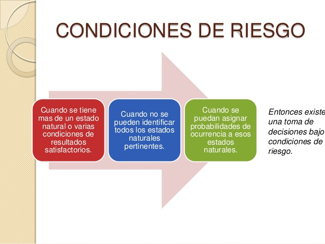

ANÁLISIS DE RIESGOS
En condiciones de riesgo, las ventajas asociadas a cada alternativa de decisión se describen con distribuciones de probabilidades. Por esta razón la toma de decisiones bajo riesgo se suele basar en el criterio de valor esperado, en el que se comparan alternativas de decisión con base en la maximización de la utilidad esperada, o la minimización del costo esperado. Sin embargo, como el método tiene sus limitaciones, se modifica el criterio de valor esperado para enfrentar otras situaciones.
